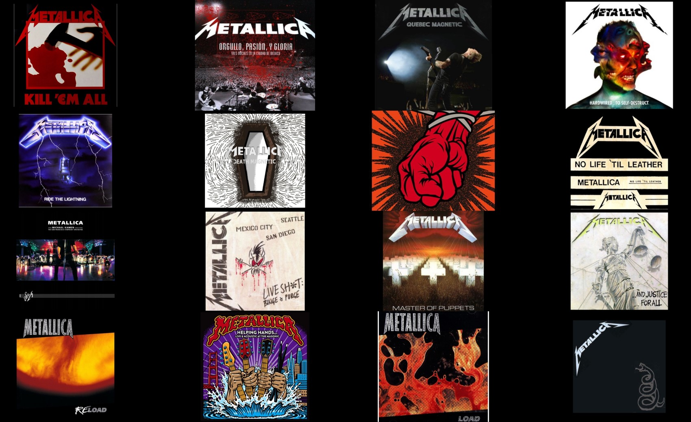
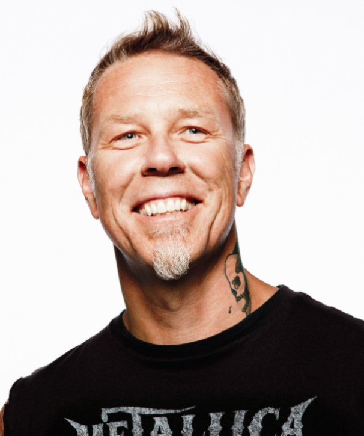
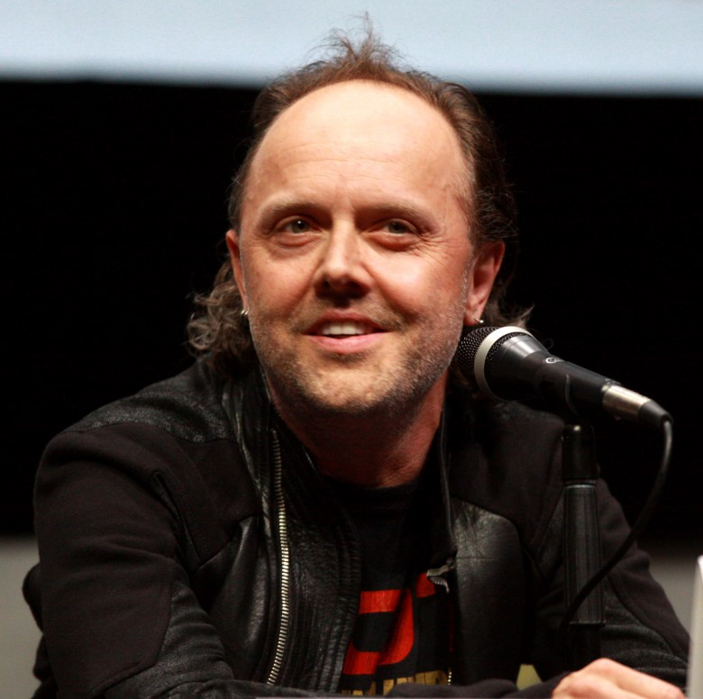
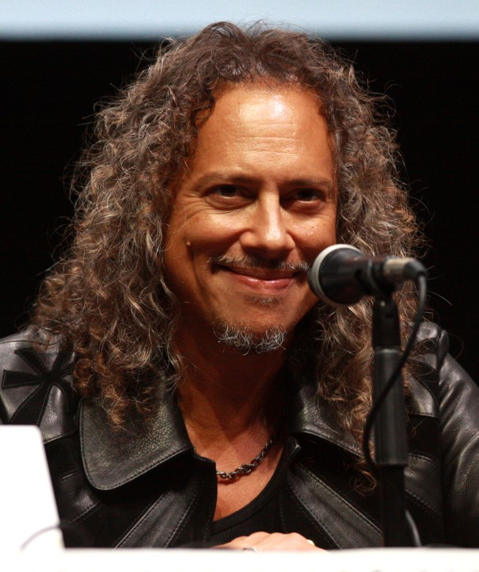
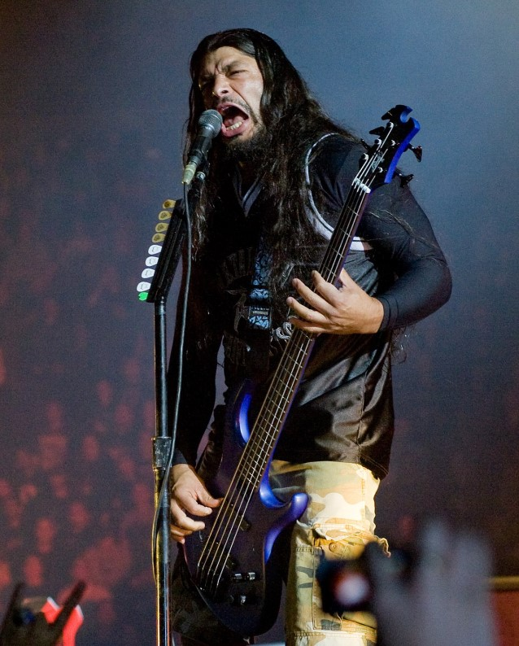
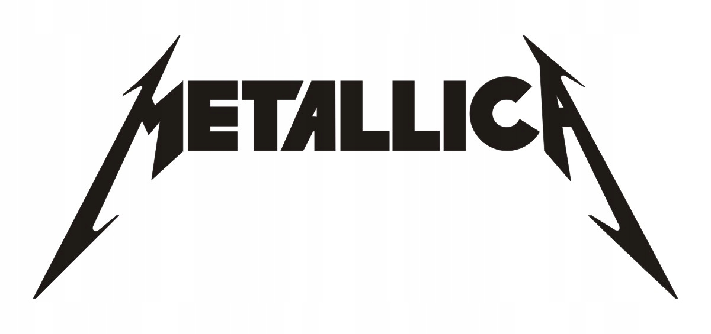

Metallica YouTube
Metallica YouTube
Metallica – amerykański zespół heavymetalowy i thrashmetalowy założony w Los Angeles w 1981 roku przez Jamesa Hetfielda i Larsa Ulricha. Jest on uważany za jeden z najważniejszych, najbardziej wpływowych zespołów metalowych lat 80. a w latach 90. ubiegłego stulecia za najbardziej dochodowy zespół metalowy, a także za jeden z najpopularniejszych i najwybitniejszych zespołów heavymetalowych w dziejach.
Historia założenia
Początki zespołu sięgają maja 1981r. gdy wokalista i gitarzysta James Hetfield oraz perkusista Lars Ulrich spotkali się na Jam Session po zamieszczeniu ogłoszeń w tym samym wydaniu gazety. Hetfield, występujący już wcześniej w kilku zespołach, nie był zadowolony z umiejętności Ulricha, który nie grał dotąd w żadnym zespole. 28 października 1981 Ulrich powiedział Hetfieldowi, że ma zarezerwowane miejsce na kompilacji Metal Massacre, wydawanej przez jego znajomego, Briana Slagela, założyciela wytwórni płytowej Metal Blade Records. Lars Ulrich na początku 1982 roku postanowił zamieścić kolejne ogłoszenie w gazecie, związane z gitarzystą prowadzącym. Odpowiedział na nie Dave Mustaine. Na spotkaniu z zespołem nie musiał nawet grać, ponieważ samo jego dotychczasowe doświadczenie zrobiło wystarczające wrażenie na Hetfieldzie i Ulrichu. Z ustabilizowanym już składem Metallica zagrała swój pierwszy koncert 14 marca 1982 w Radio City w Anaheim w stanie Kalifornia. Do końca 1982 r. zespół głównie dawał koncerty, nagrał kilka dem. Hetfield widząc że Ulrich poprawił swoje umiejętności postanowił nagrać z nim utwór. Na początku 1982 roku Metallica nagrała utwór „Hit the Lights”, w składzie Hetfield (Bas, gitara i wokal) oraz Ulrich na bębnach oraz Dave Mustaine na gitarze prowadzącej. Drugą solówkę zagrał gitarzysta Lloyd Grant. Skład który zagrał ten utwór nie jest pewny, ponieważ na wydaniu nie ma takowych informacji, a wypowiedzi muzyków są sprzeczne. 14 czerwca 1982 została wydana pierwsza edycja Metal Massacre z utworem „Hit the Lights”. W grudniu 1982 nastąpiła zmiana basisty. McGovney odszedł, a zastąpił go Cliff Burton, którego Hetfield i Ulrich zobaczyli występującego z zespołem Trauma. Burton zgodził się dołączyć do Metalliki, ale zespół musiał przeprowadzić się do San Francisco.
Albumy
Skład
James Alan Hetfield – współzałożyciel, wokalista, gitarzysta, kompozytor, producent muzyczny i autor tekstów zespołu Metallica

Lars Ulrich – perkusista i jeden z założycieli zespołu Metallica

Kirk Lee Hammett – gitarzysta

Robert Trujillo – gitarzysta basowy
